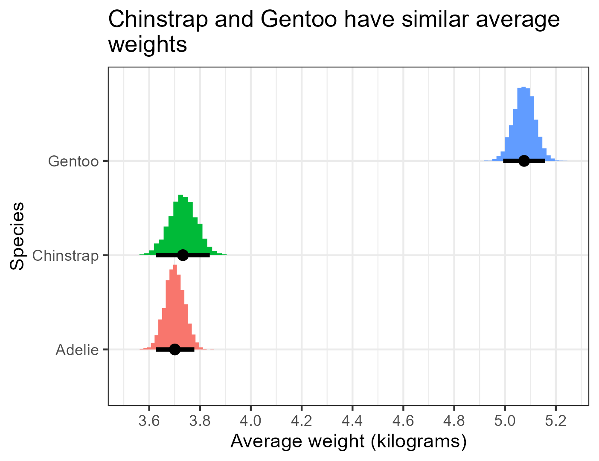
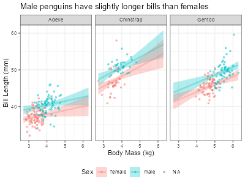

Load libraries and data
library(ggplot2)
library(brms)
library(tidybayes)
options(brms.backend = "cmdstanr")
data(penguins)
penguins$body_mass_kg <- penguins$body_mass / 1000library(ggplot2)
library(brms)
library(tidybayes)
options(brms.backend = "cmdstanr")
data(penguins)
penguins$body_mass_kg <- penguins$body_mass / 1000Let us return to our model for learning about the average penguin weight by species:
fit_peng1 <- brm(
formula = body_mass_kg ~ species,
data = penguins
)We now know that Bayesian models use clever math to draw a bunch of random values to describe the parameters of interest. The image below shows some colored histograms that represent the random draws—i.e., the posterior distributions—that brms got to describe each average penguin weight. The black dots are the estimated means of these histograms and the black bars around the black dots represent 95% credibility intervals of the average weights.
# Create a reference grid with one row per species
species_grid <- data.frame(species = c("Adelie", "Chinstrap", "Gentoo"))
# Extract posterior draws of the mean (epred = expected prediction)
posterior_means <- add_epred_draws(species_grid, fit_peng1)
ggplot(posterior_means, aes(x = .epred, y = species, fill = species)) +
stat_histinterval(breaks = 20, point_interval = "mean_qi", .width = 0.95) +
scale_x_continuous(breaks = seq(3.4, 5.6, by = 0.2)) +
labs(
title = "Chinstrap and Gentoo have similar average\nweights",
x = "Average weight (kilograms)",
y = "Species"
) +
theme_bw() +
theme(legend.position = "none")
Now let us revisit the model summary we saw before:
Family: gaussian
Links: mu = identity
Formula: body_mass_kg ~ species
Data: penguins (Number of observations: 342)
Draws: 4 chains, each with iter = 2000; warmup = 1000; thin = 1;
total post-warmup draws = 4000
Regression Coefficients:
Estimate Est.Error l-95% CI u-95% CI Rhat Bulk_ESS Tail_ESS
Intercept 3.70 0.04 3.63 3.77 1.00 3794 2739
speciesChinstrap 0.03 0.07 -0.10 0.17 1.00 3977 2723
speciesGentoo 1.38 0.06 1.27 1.49 1.00 3844 3151
Further Distributional Parameters:
Estimate Est.Error l-95% CI u-95% CI Rhat Bulk_ESS Tail_ESS
sigma 0.46 0.02 0.43 0.50 1.00 3943 2698
Draws were sampled using sample(hmc). For each parameter, Bulk_ESS
and Tail_ESS are effective sample size measures, and Rhat is the potential
scale reduction factor on split chains (at convergence, Rhat = 1).The numerical summaries we met before have enriched their meaning: they capture different parts of the histograms in Figure 4.1. Estimate shows their mean (painted as black dots), Est.Error shows their standard errors, and l-95% CI and u-95% CI show their 5% and 95% quantiles of the histograms (painted as black bars).
Other terms in the summary need elaboration, like chain, iter, warmup, Rhat, and Bulk_ESS and Tail_ESS. The formal definitions of these terms are very complicated, but an informal understanding is enough to fit almost all the models we need.
The random draws we get form a sequence or chain. Also, to get each random draw, brms goes through a computational process that it calls an iteration. The first few draws are usually too inaccurate to be useful, so we have to let the chain discard some warmup iterations.
Our penguin regression above used four chains, each of which had 2000 iterations—including warmup iterations, which we discard. Combining the post-warmup draws from all four chains gives us 4000 useful draws in total.
For complicated mathematical reasons, draws from a given chain tend to be related to each other, which makes them less informative than if they were independent. The effective sample size (ESS) measures the equivalent number of random draws we would have if our iterations were independent. A higher ESS means more reliable estimates. Bulk ESS measures the reliability of the center (or bulk) of our posterior distribution, e.g., the number we see in the Estimate column. Tail ESS measures the reliability of the tails of the posterior distribution, e.g., the numbers in columns l-95% CI and u-95% CI. So, having both a high Bulk ESS and high Tail ESS suggest that our histograms as a whole are reliable.
We want the effective sample size to be high enough to get stable estimates of uncertainty. In practice, this means that the ESS for all parameters should be above 400 in most models, or at least 100 for special parameters in complicated models. Our penguin model above has way more ESS than this: the lowest Bulk ESS is 3794 (for the Intercept) and the lowest Tail ESS is 2698 (for the standard deviation sigma).
Finally, our chain is supposed to get draws for all the relevant values of the parameter of interest. However, with complicated models or difficult data, a chain can get stuck in a few specific values, depriving us of an accurate description of the posterior distribution. To check that we are getting all the relevant values, we should check that multiple chains converge to the same random values. In practice, we should use at least four chains when fitting any model.
R-hat (often styled \(\hat{R}\)) diagnoses convergence by comparing the variance of numbers within the chains to the variance across different chains. If the chains converged, these two variances should be roughly the same, so R-hat would equal 1. If the chains did not converge, the variances would differ and R-hat would be higher than 1.
In practice, an R-hat above 1.01 signals convergence problems and, therefore, unreliable results; an R-hat below 1.01 means that our chains converged well, so our results are reliable. Our penguin model shows that the R-hat for all parameters is practically 1. C’est magnifique!
Our success in comparing penguins’ weight by species has made us more curious about these lovely amigos. Let us consider now, how much longer or shorter are the bills of male penguins compared to female penguins on average? Before we fit a regression, consider that bill length may be related to the size of the penguins, which in turn changes by sex and species. We can visualize these associations below:
ggplot(
data = penguins,
mapping = aes(x = body_mass_kg, y = bill_len, color = sex)
) +
geom_point() +
labs(title = "Weight is higher for males and increases with weight", x = "Body mass (kg)", y = "Bill length (mm)") +
theme_bw() +
facet_wrap(~species, nrow = 1) +
theme(legend.position = "bottom")
We could fit a regression with bill length (in milimiters) as the dependent variable, using sex as the independent variable and adding weight as a proxy for size. To make our model parameters easier to interpret, we will recenter weight (body_mass_kg) around its overall mean of 4.2 kg.
penguins$bm_kg_ctr <- penguins$body_mass_kg -
mean(penguins$body_mass_kg, na.rm = TRUE)We can fit our model more efficiently by changing the number of chains and iterations. By default, brms uses 4 chains, each with 2000 total iterations of which half are for warmup. Our model for bill length is relatively simple, so let’s try saving some computer time by using fewer iterations per chain. And let us be cool by having brms fit all the chains in parallel rather than one after the other.
bill_len_fit1 <- brm(
formula = bill_len ~ sex + species + bm_kg_ctr,
data = penguins,
chains = 4,
cores = 4, # for running chains in parallel
iter = 800, # short for "iterations per chain" (this includes warmup)
warmup = 400 # must be lower than iter
)In the code above, the argument chains controls how many separate sequences of random values we will use. warmup controls how many random draws we will discard at the beginning. iter (short for iterations) controls the total number of random draws per chain, which includes the warmup. cores controls the number of mini-brains in our computer that R will occupy. Each chain runs in one core, so with four cores we can run four chains simultaneously. We never need more cores than chains, and we can not use more cores than our computer has available. In practice, ask for at most one core less than those available in your computer; the extra core will run everything else (e.g., internet browsers or Excel).
The regression summary below shows that the effective sample sizes for all parameters are well above the minimum threshold of 400, and all R-hats are equal to 1. And since R did not show any errors or concerning warnings, we can trust that our model ran appropriately.
summary(bill_len_fit1) Family: gaussian
Links: mu = identity
Formula: bill_len ~ sex + species + bm_kg_ctr
Data: penguins (Number of observations: 333)
Draws: 4 chains, each with iter = 800; warmup = 400; thin = 1;
total post-warmup draws = 1600
Regression Coefficients:
Estimate Est.Error l-95% CI u-95% CI Rhat Bulk_ESS Tail_ESS
Intercept 38.42 0.38 37.63 39.15 1.00 1096 936
sexmale 2.55 0.35 1.85 3.22 1.00 1143 1123
speciesChinstrap 9.96 0.32 9.34 10.59 1.00 1766 994
speciesGentoo 6.30 0.59 5.12 7.46 1.00 1044 981
bm_kg_ctr 1.73 0.38 0.96 2.50 1.00 1069 1004
Further Distributional Parameters:
Estimate Est.Error l-95% CI u-95% CI Rhat Bulk_ESS Tail_ESS
sigma 2.27 0.09 2.10 2.44 1.00 1632 1145
Draws were sampled using sample(hmc). For each parameter, Bulk_ESS
and Tail_ESS are effective sample size measures, and Rhat is the potential
scale reduction factor on split chains (at convergence, Rhat = 1).The coefficient for sexmale tells us that, if we took two penguins of the same species and average weight, we would expect the male penguin to have a bill that is between 1.85 and 3.22 mm longer on average than the female penguin.
A plot will help us visualize other regression results. First we define the coordinates that we want to see. expand.grid() can build a data frame with the coordinates we want to plot results for. We fill this function with the names and values of the variables we want to get. expand.grid() will then create all possible combinations of the values of these variables.
pred_grid <- expand.grid(
sex = levels(penguins$sex),
species = levels(penguins$species),
bm_kg_ctr = seq(
min(penguins$bm_kg_ctr, na.rm = TRUE),
max(penguins$bm_kg_ctr, na.rm = TRUE),
length.out = 50
)
)
head(pred_grid)Now we can combine the results from our model bill_len_fit1 with the values in pred_grid to paint regression values at these coordinates. add_epred_draws() uses the draws we got from brm() to compute many plausible averages of our dependent variable (bill length) many times. Finally, all these results are arranged in a format that is easy to plot with ggplot and other libraries. Luckily, the code to execute this rather involved process is blissfully simple:
posterior_lines <- add_epred_draws(
newdata = pred_grid,
object = bill_len_fit1
)We can read the code above as “for each point of interest in pred_grid, we want ndraws draws from bill_len_fit1”. Omitting ndraws will ask add_epred_draws() to use all available draws in bill_len_fit1. Using more draws increases the precision of the plots we paint, but also the time it takes to draw them. 600 draws are usually precise and fast enough to plot and summarize results; we can use all the draws only when presenting the final results of an analysis.
Finally, we can combine ggplot with the tidybayes library to create a plot. stat_lineribbon() takes all the regression draws we saved in posterior_lines and, with some trickery, transforms them into a smooth plot. The thick lines represent the means and the shaded regions represent the credibility intervals of the average bill length at each weight.
# Save mean to return body mass to de-center body mass.
bm_kg_mean <- mean(penguins$body_mass_kg, na.rm = TRUE)
ggplot(
data = posterior_lines,
mapping = aes(x = bm_kg_ctr + bm_kg_mean, y = .epred, color = sex, fill = sex)
) +
stat_lineribbon(point_interval = "mean_qi", .width = c(0.66, 0.9), alpha = 0.3) +
facet_wrap(~species) +
labs(
title = "Male penguins have slightly longer bills than females",
x = "Body Mass (kg)",
y = "Bill Length (mm)",
color = "Sex",
fill = "Sex"
) +
theme_bw() +
theme(legend.position = "bottom") +
# OPTIONAL: Add observed data to plots
geom_point(
data = penguins,
aes(x = bm_kg_ctr + bm_kg_mean, y = bill_len),
alpha = 0.5,
size = 1
)
In stat_lineribbon(), point_interval controls the type of estimates that the plot will show, with "mean_qi" referring to using a mean and quantiles for the credibility intervals. .width controls the quantiles we use to delineate the credibility intervals. Using c(0.66, 0.9) uses quantiles for 66% and 90% credibility.